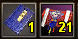

Passo a Passo
Introdução

Para obter um item Único, você precisa fazer e usar uma Armadura Espiritual Eterna primeiro.
[Armadura Dragão Negro "BD"]
※ Armadura do Dragão Negro é feita através de alguns materiais, pode ser dropado de alguns monstros épicos.
[Materiais]
※ Como obter Craftsman Sack? Para obter esses itens basta matar monstros em mapas especifícos,o mapa "Templo Abandonado" dropa este material.Outra forma de dropar os materiais é desmanchando itens. Os Livros para fazer as armaduras são dropados de boss ou ate mesmo de monstros especifícos.
